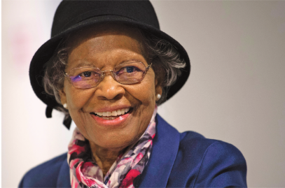

Navigating More Than GPS:Dr. Gladys West's Journey
Through Race, Gender, and Technology
h1>

Dr. Gladys West was an American mathematician whose work helped create the mathematical foundation for modern GPS technology. She grew up in rural Virginia and pursued education as a way to build a different future for herself. Dr. Gladys West studied mathematics at Virginia State College, a Historically Black College and University, where she earned both her bachelor’s and master's degree. In 1956, she began working as a mathematician at the U.S. Naval Provision Ground in Dahlgren, Virginia.
During her career, she analyzed satellite data and used advanced computers to develop highly accurate mathematical models of the Earth’s shape. Her calculations helped scientists determine precise locations using satellites, which later contributed to the development of GPS. Dr. Gladys West’s accomplishments are especially significant because she succeeded as a Black woman mathematician during a time when opportunities in mathematics and technology were limited for women and African Americans.
Her legacy is not only defined by GPS, but by the barriers she broke along the way.
Learn more about Dr. Gladys West's story and contributions in this video.
This video gives more background on Dr. Gladys West’s education, career,
GPS contributions, and later recognition.
Related Resources
This Scripps New video gives a short overview of
Dr. Gladys West's life and work.
This People of Color in Tech article gives a brief overview of Dr. Gladys West’s career, contributions to GPS, and later recognition.
This American Mathematical Society article gives a more detailed look
at Dr. Gladys West’s education, career, mathematical work, and the
barriers she faced.